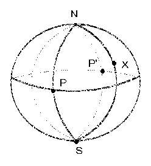

Five points are placed on a sphere of radius 1. That is the largest possible value for the shortest distance between two of the points? Find all configurations for which the maximum is attained.
Solution
Answer: √2. All maximal configurations have two points at opposite ends of a diameter. The other three points lie on the great circle midway between these two points (such that the distance between any two is at least √2).
Suppose the points are such that the distance between any two is at least √2. Then any two must subtend an angle of at least 90o at the center of the sphere. We claim that two of the points must be at opposite ends of a diameter. Let S be one of the points. Take it at the south pole. So suppose that none of the points is at the north pole N. If the other 4 points all lie on the equator, then they must be equally spaced and so a pair lie at opposite ends of a diameter as claimed.

If there is a point X not on the equator, then take a line of longitude L1 through it. Now take three other lines of longitude L2, L3, L4, so that the 4 lines are equally spaced. They divide the northern hemisphere into 4 equal quadrants (which overlap along the lines of longitude). Each quadrant is a curvilinear triangle with three vertices. Clearly, if no two points in the same quadrant subtend an angle of more than 90o at the center, and if they subtend an angle of 90o, then one must be a vertex and the other must be on the opposite (curvilinear) side. Thus (1) the minimum angle is at least 90o, and (2) each of the two quadrants containing X must contain another of the 4 points (apart from X) and they must lie at P and P'. But now P and P' are opposite ends of a diameter.
Now if 2 of the 5 points are opposite ends of a diameter, and the minimum distance is at least √2, then the other three points must lie on the great circle midway between.

© John Scholes
jscholes@kalva.demon.co.uk
28 Dec 2002
Last corrected/updated 28 Dec 02